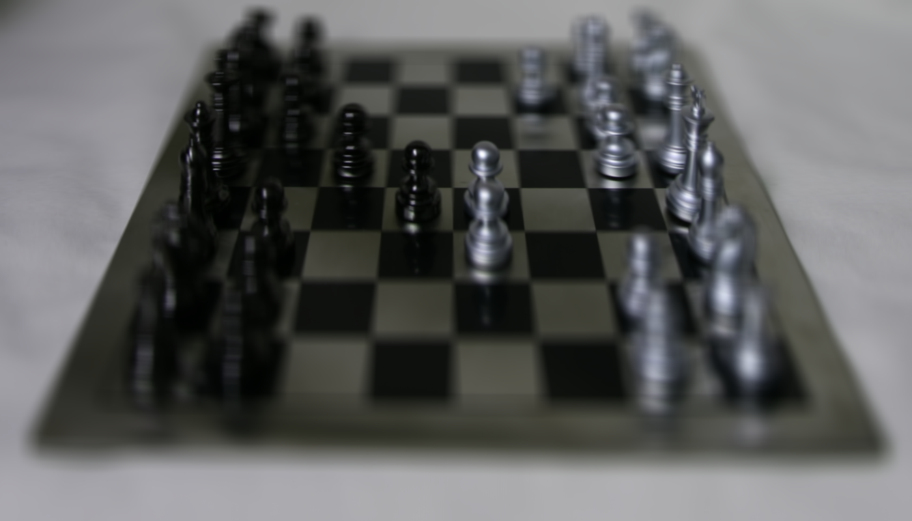
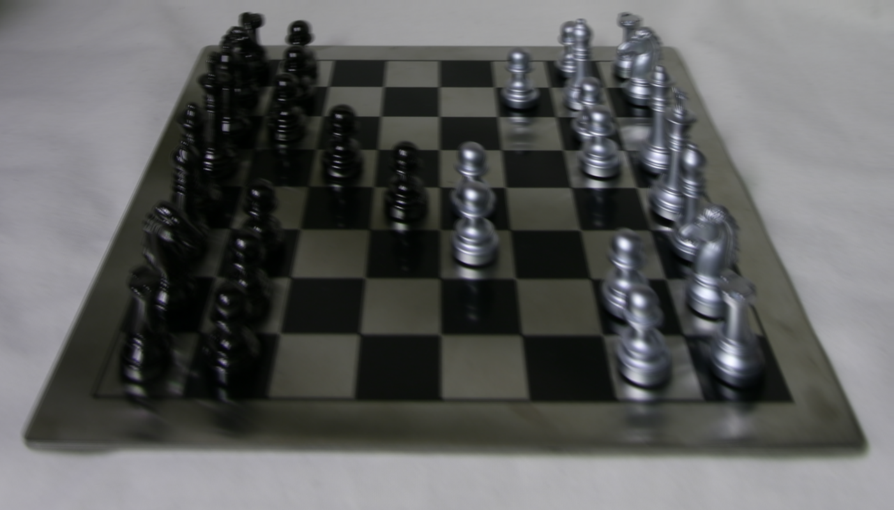
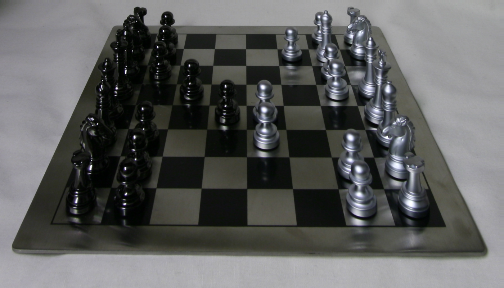
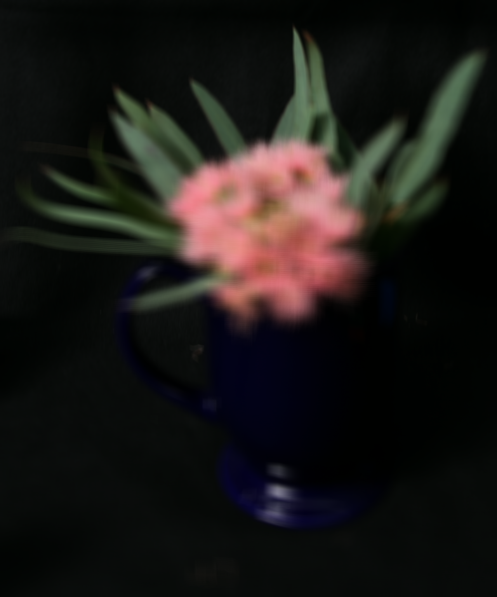
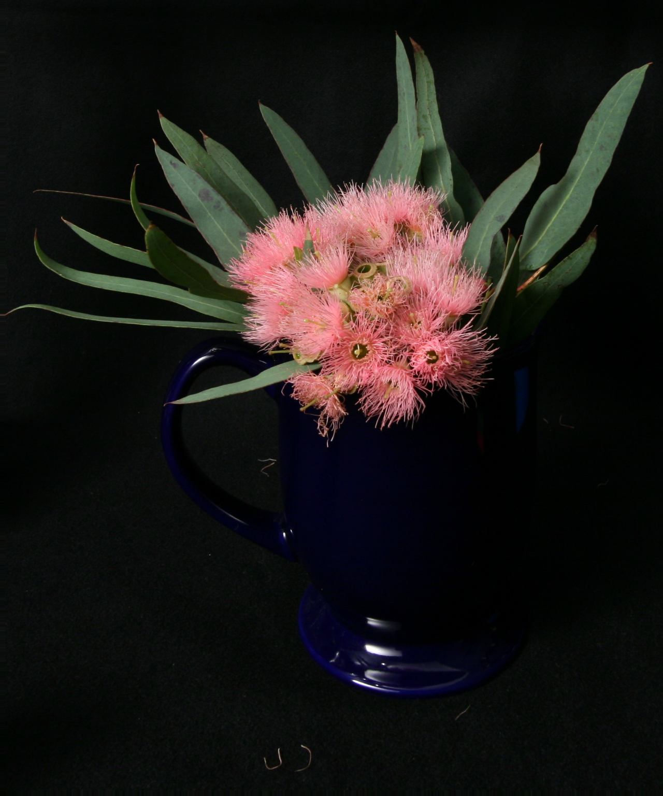

Depth Focusing with Image Averaging


The first part of this project was depth refocusing. Images are from the Stanford Light Field Archive.
Rectified coordinate data is given for images taken in a rectangular grid pattern.
To simulate focus depth, we apply a linear shift to the images, use affine warp to shift the images to the center location, and average all the images.
Depending on the amount of linear shift, the image average produces a different depth of field, as you can see in the gifs above.
Aperture Selection
Chess set with large aperture (including images with Euclidian distance up to 10000) and depth 70

Chess set with medium aperture (including images with Euclidian distance up to 100) and depth 70

Chess set with small aperture (including images with Euclidian distance up to 20) and depth 70

Flower with large aperture (including images with Euclidian distance up to 10000) and depth 70
Flower with medium aperture (including images with Euclidian distance up to 100) and depth 70

Flower with small aperture (including images with Euclidian distance up to 20) and depth 70